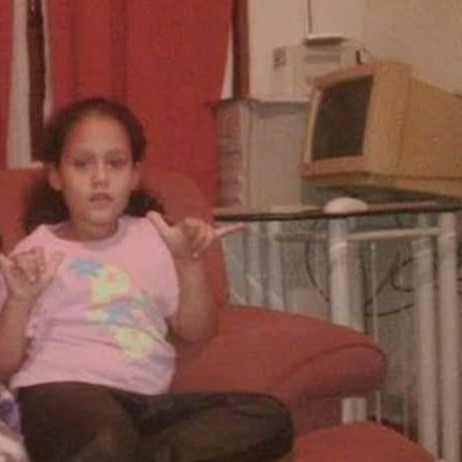
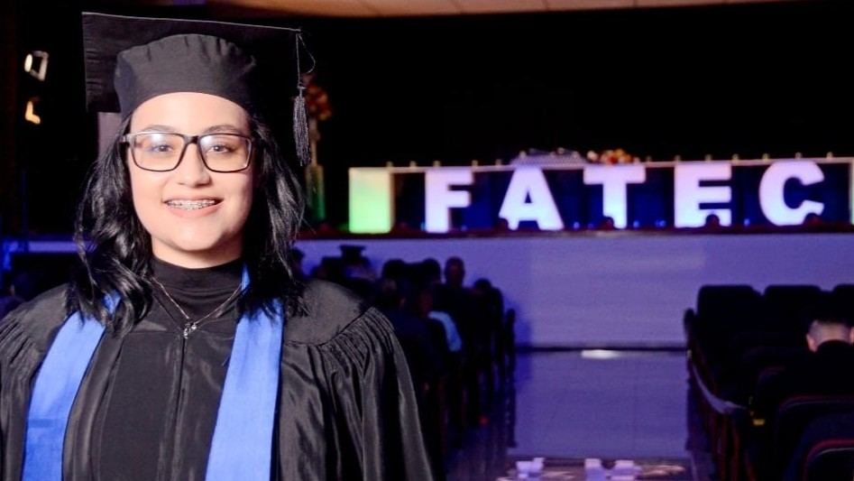

Sobre mim
 Minha relação com computadores começou cedo. Quando criança, era eu quem ligava a internet discada ou o modem só para assistir vídeos engraçados online, e quando a banda acabava, me divertia no famoso Paint ou jogando Pinball. Desde aquela época, percebi que tinha prazer em explorar o mundo dos computadores. Lembro até hoje do meu primeiro notebook, da (já falecida) Itautec, que me acompanhou por boa parte da infância e adolescência até o fim do ensino médio. E como toda adolescente curiosa, fiz um teste vocacional no BuzzFeed (quem nunca, né? 😅). Para minha surpresa, minhas características introspectivas e analíticas apontavam para algo além da área administrativa.
 Curiosamente, optei por cursar o ensino médio integrado à Administração (ao invés de mergulhar em TI já de início 😅), porque realmente gostava da área. Mas ao concluir, percebi que algo não brilhava. O que brilhou, de fato, foi a descoberta da Ciência de Dados, uma área que une tecnologia, análise de negócio e inteligência. Entre 2021 e 2023, tive a oportunidade de estudar na FATEC de Santana de Parnaíba, onde desenvolvi minhas principais skills técnicas e encontrei minha verdadeira vocação.
Foi uma experiência marcante: concluí o curso com mérito, fui outorgada como Cientista de Dados e tive a honra de ser oradora da turma. Nesse período, já atuava no mercado: comecei como Analista de Suporte, depois como QA (Quality Assurance) na implantação de um sistema de grande porte, e em seguida assumi o papel de Analista de Sistemas, garantindo a qualidade e conformidade das funcionalidades. Além disso, atuei como Assistente de BI, experiência que também foi considerada estágio pela universidade, pois estava inserida diretamente no meu dia a dia profissional. Atualmente trabalho como analista de sistemas, colaborando também em iniciativas de BI, sempre com um olhar curioso e apaixonado pelo potencial que os dados carregam.